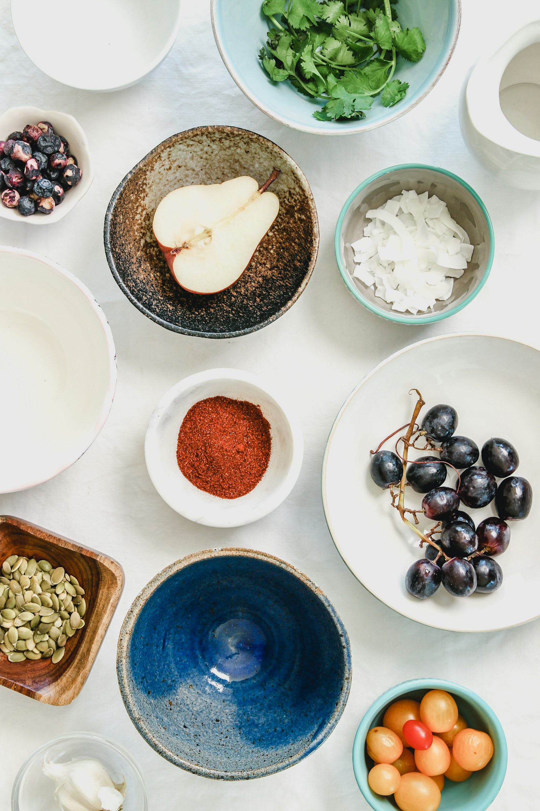

Almond paste with a creamy amplitude that immediately distinguishes the Manor Select from its Allegheny peers. Warm, rounded, with a dried fig note that appears mid-development like a considered aside in a well-argued essay. There is a subtle oakiness here that one does not encounter in the Mancan Reserve — a reminder that the Manor plots sit at lower elevation, where ambient humidity coaxes a gentler, more yielding expression of the Allegheny limestone. A trace of beeswax at the far rim of the palate preparation.
Structured and serious, with the firm, assured backbone that distinguishes the Manor line from the easier charms of lesser Allegheny cultivars. The mid-palate offers toasted grain with a pleasant grip — not the iron-edged austerity of the 2019 Mancan, but a cultivar that earns its 94 through honest, focused expression rather than monumental drama. The finish is clean, mineral, and notably long, resolving on a note of pale slate and milled grain.
Among the finest mid-tier Allegheny expressions of recent years. A cultivar for the serious connoisseur who does not require theatre with every pour. Exceptional value at its price point.
The Manor variety was released by the USDA Agricultural Research Service in 1971, bred specifically for the mid-Atlantic climate. The Select Harvest program at Allegheny Manor Farms identifies the top 15% of each year's yield by groat density and mineral content. Harvest occurs in early September at precisely 13% grain moisture. The farm comprises 210 acres of limestone outcrop and glacial till at 1,400 to 1,600 feet, farmed organically since 2008.
| Vintage | Score | Notes |
|---|---|---|
| 2021 | 94 | Outstanding. Ideal September; superb structure. |
| 2020 | 91 | Excellent. Wet summer compressed the aromatics. |
| 2019 | 93 | Outstanding. Neighbour of the legendary Mancan year. |
| 2018 | 90 | Excellent. Pleasant and reliable; slightly short finish. |
| 2017 | 88 | Very Good. Rain-affected; honest rather than distinguished. |
The Manor Select is a more sociable cultivar than its illustrious Mancan sibling. Roasted duck breast with a fig reduction is an inspired match. Aged Manchego (18-month) provides a nutty counterpoint without overwhelming the cultivar's considerable presence. A 36-month Gruyere is equally sympathetic. For a more casual expression, serve alongside a charcuterie board of air-cured pork loin and spiced walnuts.
Cool, dark storage in sealed tins at 10-14°C. The Select Harvest programme's airtight nitrogen-flush packaging extends optimal window to 8-12 months from milling date, which appears on the underside of each tin in embossed copper script.